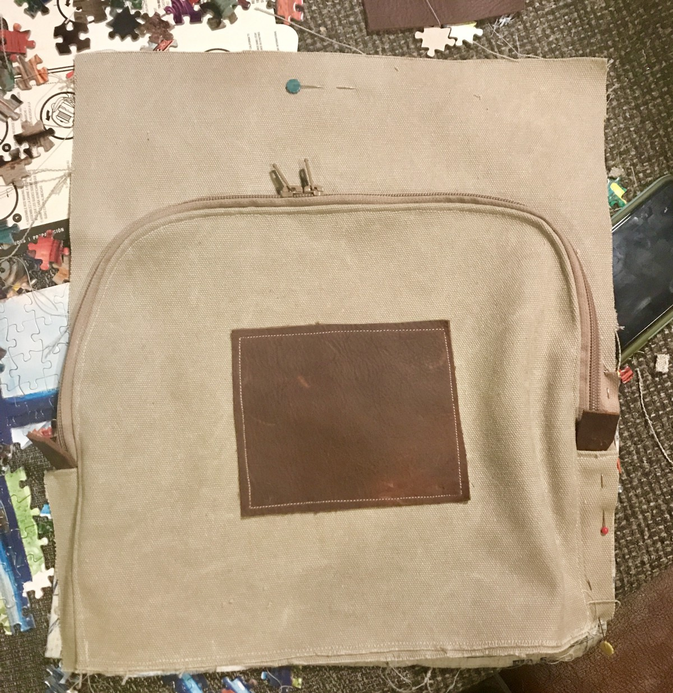
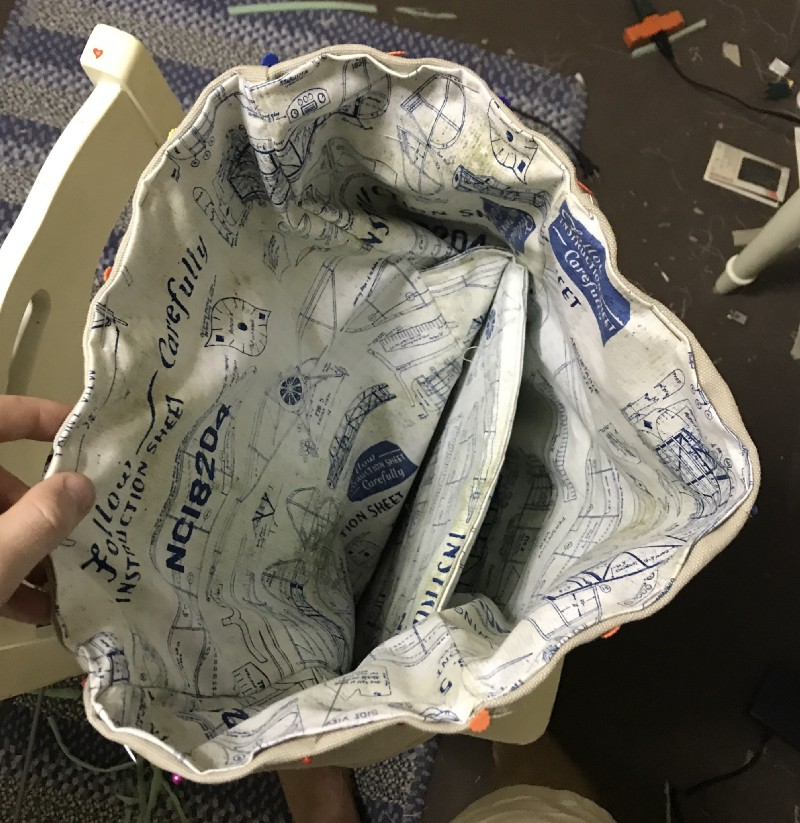

I have always been searching for a stylish and functional backpack, but style always came with a hefty price tag, and function with a lack of style. Since I could not find the perfect balance, I decided to take matters into my own hands.
To start the process, I made a list of all of the features that I desired in my dream backpack. I wanted it to be minimalist, as my previous ones were big and clunky with a dozen pockets. I prioritized a place for my laptop, notebooks, pens, wallet and chargers.
To put these features into context, I searched for inspiration in briefcases featured in Design Milk blogs, backpack patterns on Pinterest and pictures I would sneakily take of backpacks I saw on other people (so sorry). After referencing my collection of ideas, I made sketches of an ideal backpack based on my desires and grounded in feasibility.
The result was a design that included a roll top opening, laptop protection inside, side drink pockets and an outside pocket for items like my wallet and notebooks.
Amidst my brainstorming excitement, I completely forgot that I had absolutely no idea how to make a backpack, or even how to sew. So, I recruited the best people in the business: my Sister with unique taste, who helped with selecting materials and resources, my Mom with immense knowledge, who taught me the basics of sewing, and my Aunt with fantastic skill, who helped me with the difficult details.
After shopping with my Sister, these were the materials that I started with.
Once my materials were shopped and cut, I started with the sides of the backpack. They seemed simple enough ¯\_(ツ)_/¯
Taking into consideration that I always carry a sentimentally important Nalgene water bottle, I made sure that the measured dimensions for the pockets would be a custom fit. To ensure that the pockets would grip its contents, I cut identical size pieces of outside fabric and liner, sewed them together and sewed a shorter piece of elastic into the top, like a scrunchie!
I was flying high. Sewing was easy…
…or so I thought. My hubris shattered when I tried to sew the front pocket and I quickly learned how to take apart seams to start over…and over again.
Humbled but not defeated, I took my designs and materials on the road to my family reunion so I could seek guidance from the master sewer, my Aunt. She helped me with the design of the front pocket, which I wanted to fit my notebooks, wallet, pencils and chargers.
I cut out the pieces for the inside pockets with my lining fabric, pinned them to their respective main pieces and then sewed them on with creases to allow room to store items. Pinning the outline of where the pieces connected helped gauge how much space I had to work with.

We then worked on creating the zipper piece. Since I wanted some depth to the pocket, I added extensions to the bottom of the zipper that would connect to the outer pocket and main body of the backpack. I excitedly added leather pieces here for style and function. I wanted the leather to compliment the beige fabric.
To finish, I pinned the main front body piece, the outside piece and the zipper pieces together and sewed them all together. After adding another leather scrap compliment, below is the finished front pocket. Victory!
Once this was completed, I sewed this bottom section to a piecethat would make it the length of the full roll-top backpack. From here I also sewed my two sides of the backpack to the front.

The battle was won, but the war continued. With my confidence renewed, I moved on to the straps with the guidance of my Aunt.
In addition to my previous goals, I wanted…no needed(!) my backpack to be comfortable. This foundation begins in the straps, so I purchased thick foam and cut out the straps of my old backpack to make sure the shape was ergonomic.
My Aunt helped greatly with this, as she taught me game-changing tricks like cutting fabric diagonally along the thread direction so the piece would be stretch easily(who knew??). I cut out pieces to cover the foam and pinned them together, sewed them and then enclosed these two pieces with the line of stretchy fabric.
I saw the light at the end of the tunnel, but there were still miles to go before I could sleep.
To attach these straps, I took the solid back piece of main fabric and cut a 5 inch high piece with a greater width than the back piece. I placed the straps onto the solid back piece and laid the 5 inch piece over the extensions of the straps. I sewed five lines across the straps so that it would be secure and folded over the edges to ensure the fabric wouldn’t fray (middle picture below).
I created the bottom piece of the backpack by cutting two identical pieces of the main fabric and a smaller piece of thick foam and then encased the foam between the two pieces (top of bottom left picture). I sewed this to the bottom of the back piece, with the lower straps I made from the fabric sewed in. These straps will come up to connect to the main straps and be adjustable.
With each pump of the sewing machine, I could hear the chants of “Warm up the bus!”…but I knew I had to finish strong.
With all of my pieces made, I pinned them all together inside out. After sewing all of the edges, I turned it right-side out to see my assembled backpack. I can still remember my excitement in seeing my sketches materialize for the first time.

However, I wasn’t finished yet.
To add style and strength to the bag, I wanted to include a lining fabric on the inside. Also, I wanted to include protection for my laptop, so I sewed pieces of foam into the back piece and a separate piece for a laptop protector. I pinned all of the pieces together, like I did for the main bag, sewed it but kept it inside out. To finish the product, I put the lining inside my main piece and sewed the top.
At four in the morning on the night before I left for a new school year, I triumphantly held my bag above my head, a tear in my eye, sweat on my brow, and blood on my hands from countless needle pricks.
Before I could wear this bad boy out, I needed to put the finishing touches on.
First, I hand sewed brackets onto the end of the top straps and connected the bottom straps through the brackets. Additionally, I cut up one of my old leather belts and hand sewed the connecting pieces into the front and back piece, where I had left an opening for them. This allowed me to roll my backpack shut and then close it up. It also went with my secondary leather theme.
After 100~ hours, dozens of ripped stitches, 10 pricked fingers, 7 broken needles, and 5+ yards of fabric and foam, I was done! I had my dream backpack.
What this whole process taught me is that not knowing how to do something is not an unbreakable barrier. I encountered dozens of roadblocks that could have deterred my project, but I always was able to work around it through persistence and online and human resources.
I am writing about my backpack project as a part of my past summer of side projects, but I also hope that this will be a source of inspiration in pursuing things initially thought impossible because of personal shortcomings in knowledge or skill. Whether it be a small side project, or something as big as applying for a job, don’t let yourself stand in the way. It’s a little cliché, but it’s what I experienced and learned throughout the process.
Additionally, if someone ever wants to make a backpack, I wanted to share my blueprint and process as a guide.
Don’t hesitate to reach out if you have more question or just for good conversation! (bae48@cornell.edu)